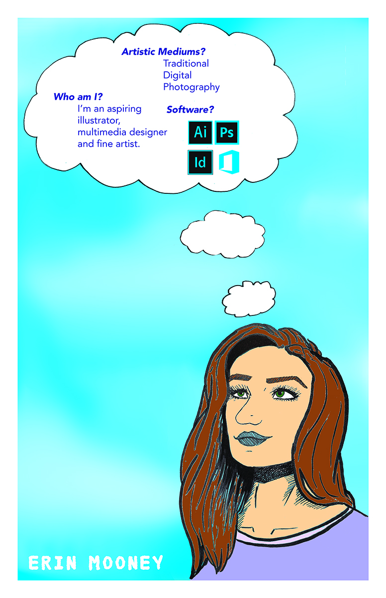

Here is the link to my resume!
Welcome to My World! Here is some information about me:
"Hello! I'm Erin Mooney, and I am an artist. Specifically, a multimedia artist which is a fancy way of saying I like to do everything. My favorite things to make art of are characters and world-building."
"One of the coolest things that an artist can do is transport the viewer to a place from the artist's imagination (or whatever subject they wanted to portray)."
As you can probably tell with my little mascot, Birdard (above), I love making characters and world-building.
I love creating characters and worlds. I am very imaginative and I let that imagination run wild! I think that one of the most powerful attributes an artist has, is the power to make drawings come to life. Therefore, I use that power as much as I can.
This doesn't necessarily mean I cannot use or refuse to use others. I just really enjoy using these the most! I love drawing and painting traditionally, and also digitally. I have a lot of experience drawing in Photoshop, Illustrator, and ProCreate.
You can contact me at edm5282@psu.edu with jobs that require a digital or multimedia artist.